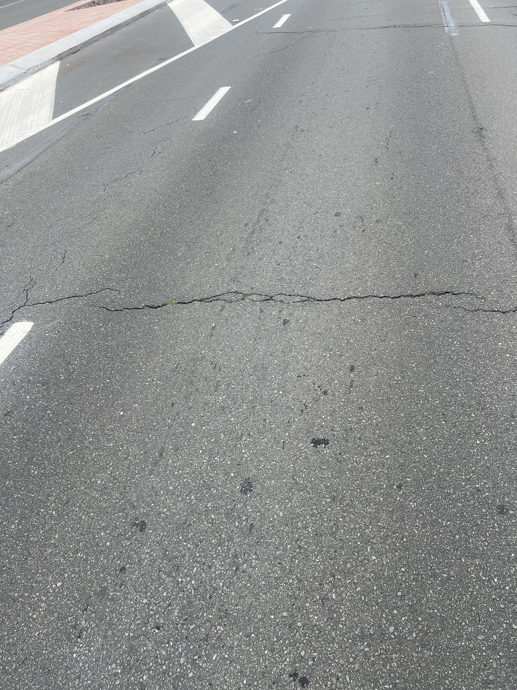
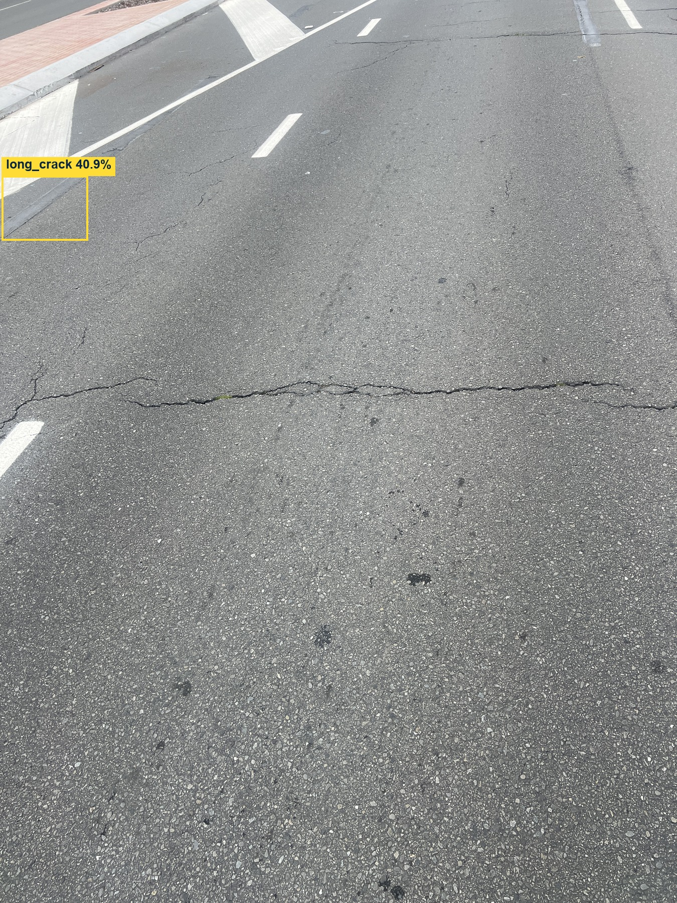
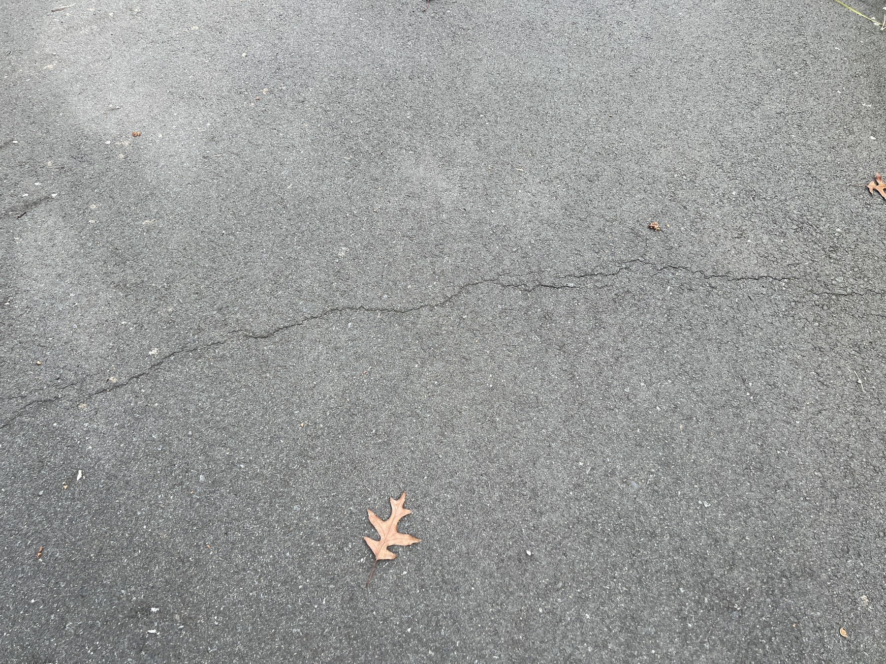
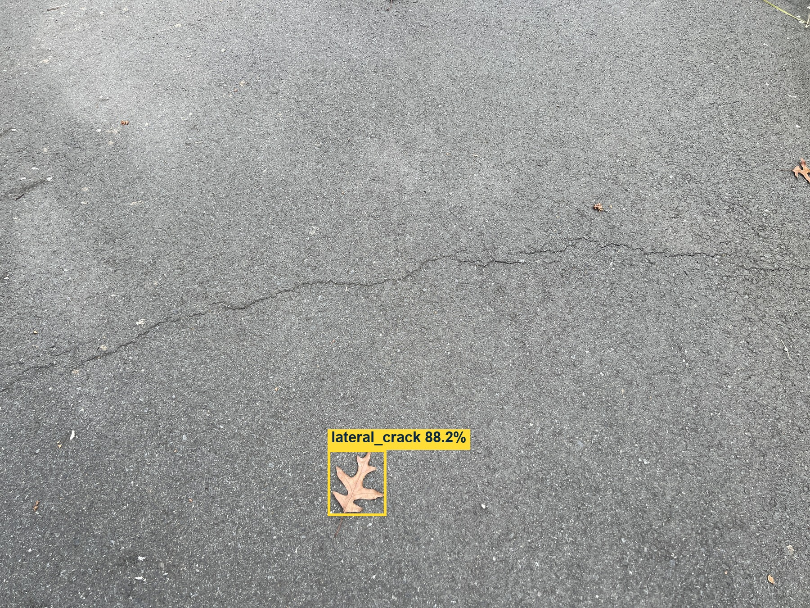
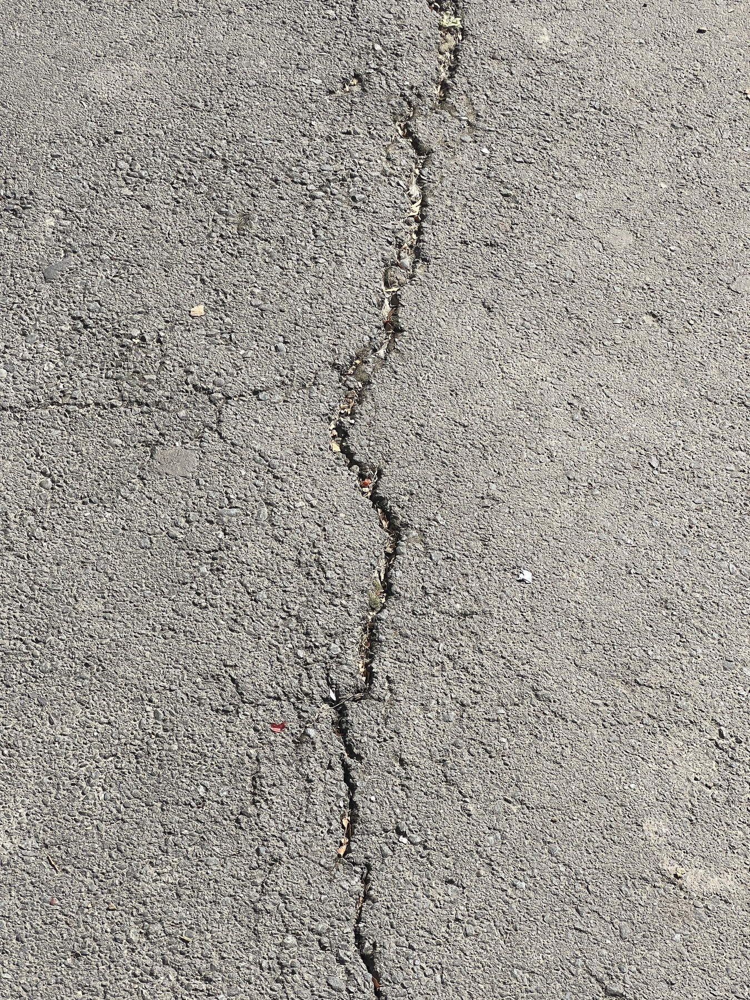

Select BEFORE for the original photograph or AFTER for the same image with the recorded YOLO predictions.
Roadway view


Before · Original photograph
Longitudinal crack: 40.9% confidence
The displayed boxes are saved model predictions. Visible defects can be missed or misclassified.
Open current image at full size ↗Close-range pavement view


Before · Original photograph
Transverse crack: 88.2% confidence
The displayed boxes are saved model predictions. Visible defects can be missed or misclassified.
Open current image at full size ↗Visible crack with no detection


Before · Original photograph
No detection at the 0.40 confidence threshold.
A visible crack is present, but this model returned no detection. No box has been added.
Open current image at full size ↗